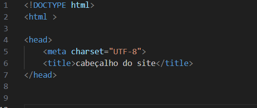
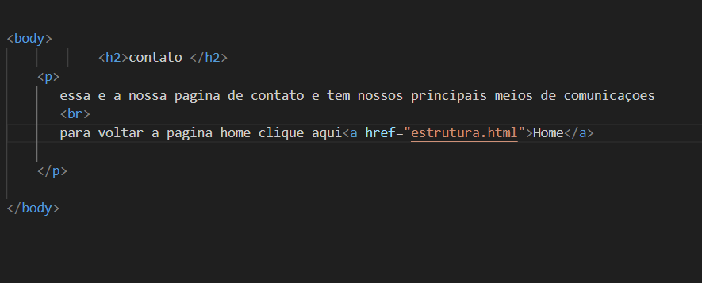
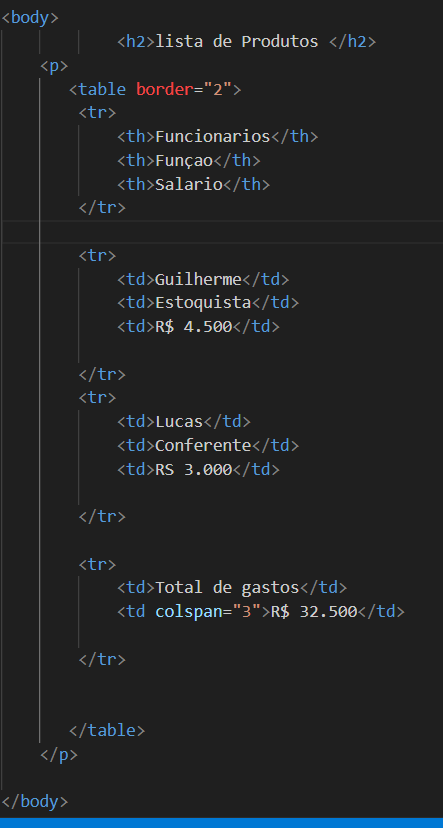

HTML
Estrutura Basica HTML
A imagem a baixo e a estrutura basica para todo site.Primeiro com a tag doctype html, que diz para o navegador qual o tipo do documento e no caso e HTML
em seguida a tag html que indica ao navegador onde se inicia o codigo e onde termina
a tag head seria o cabeçalho do site EX: meu primeiro projeto e o cabeçalho desse site
em seguida a tag body que seria da forma literal o corpo do site e onde se constoi o site todo

Cabeçalhos
o cabeçalho do site comeca a partira da tag head que vem do ingles cabeça
e serve para dizer ao navegador onde começa e onde termina o cabeçalho
Em seguida a tag titlle que e onde realmente e inserido o titulo do site confira o EX: .


Titulos e Paragrafos
Os titulos estao inseridos na tag body e para dizer oque é um titulos se usa a tag (h). Essa tag tem suas variantes que vao do h1 ao h6 e que servem para dizer ao navegador o tamanho do titulo desejado
Os paragrafos assim como os titulos estao inseridos na tag body e para dizer é um paragrafo se utiliza a tag p


Formataçao de textos
na formataçao se tem 4 principais funçoes. Negrito, texto em italico, underline, errado


Listas ordenadas
as listas ordenadas sao feitas com o intuito de ordenar seja por numeros(numericos e romanos) ou por letras estabelecendo uma ordem a ser seguida
para as listas ordenadas e utilizado primeiro a tag ol type="" (do ingles ordened list ). Type serve para definir o tipo da lista se e por numeros(1,"I" que seria numeros romanos) ou letras ("A"para maiusculo ou "a"minusculo) em seguida a tag li (list)


Listas nao ordenadas
as nao listas ordenadas sao feitas com o intuito de fazer especies de topicos seja com pontos e utilizado primeiro a tag ul(do ingles unordered list ). em seguida a tag li (list)


Imagens
para se utilizar imagens em um site HTML se usa a tag (img src="")
que diz para o editor de codigo buscar a imagens desejada no local em que ela esta.Se recomenda sempre ter a imagem baixada para que nao a perca
É possivel tambem ajustar o tamanho da imagen,porem é um topico para outro momento


Links
para usar a funçao de hyperlinks em html se utiliza a tag (a href="") (a ).
A tag a serve como uma ancora e href seria hyperlink reference que e onde realmente chama o link na hora que clica. Confira o EX:



Tabelas
para inserir tabelas em HtML se usa primeiro a tag table que diz onde inicia e onde termina a tabela em seguida a tag tr que significa table row(linha da tabela)
em seguida a tag td que significa table data(dados da tabela) existe tambem a tag th que significa table header(cabeçalho da tabela)
As tabelas no HTML sao feitas linhas apenas por linhas. O atributo border que vai em seguida da tag table serve para definir o tamanho da borda,
existe tambem a tag rowspan="" que serve para juntar linhas,
ja a colspan serve para juntar colunas veja Ex:


Formularios
com a tag form que se utiliza a funçao de formularios, com a tag input type="" e que voce diz ao navegador
qual o tipo de formulario desejado,seja de texto, senha, botao e entre outros
Caracteres especiais